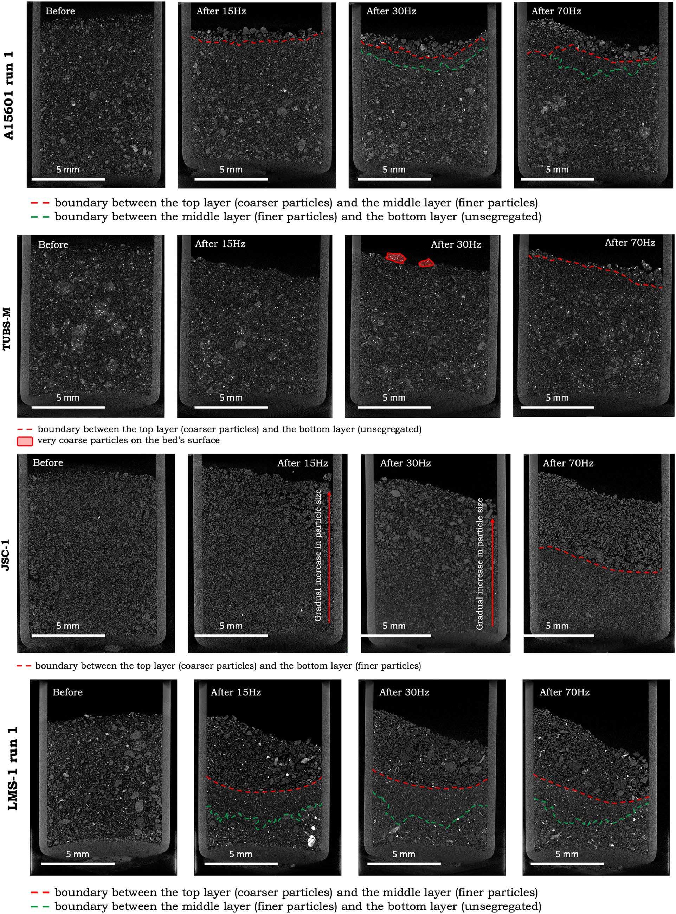

04 / PUBLICATIONSGOOGLE SCHOLAR ↗
The work.
On the record.
Selected journal publications. Search by title or author, or filter by research area. Publication titles link to Google Scholar searches; visit my full profile or ORCID record for the complete publication list.

FEATURED MINERAL PROCESSING STUDY
What a shaken lunar sample reveals.
Explore the experiments, material response and micro-CT analysis behind the 2025 regolith segregation paper.
Read the research story ↗